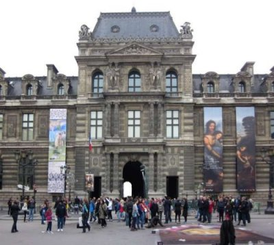
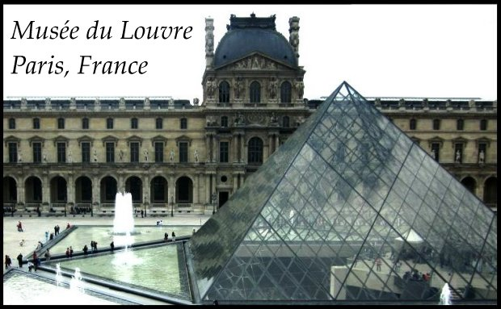
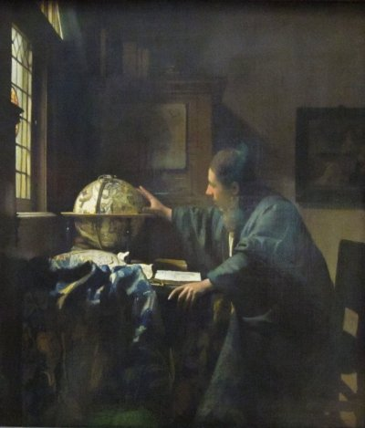
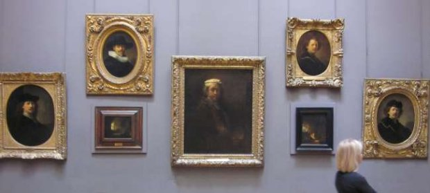

Writing
Journeys: A Peninsula Writers Bloc Anthology
Posted to ebook sellers.
» Amazon Kindle edition
» Barnes & Noble Nook book
» Kobo ebook
Print book version
» Paperback
» Hardcover
____________
Copyright © 2012 Tiger Farm Press. All rights reserved. No part of this book may be reproduced or transmitted in any form or by any means, electronic or mechanical, without permission in writing from the publisher.
Credits and copyright notices for the individual articles and photos in this collection are given in the later part of this book.
Cover by Tiger Farm Press
First Digital Edition, version 1.0
TIGER FARM PRESS  CALIFORNIA
CALIFORNIA
Journeys is a collection of essays, poems, and stories of adventures through time, space, fact, and fiction. The writers are members of the Peninsula Writers Bloc. The Bloc was founded to create a space for writers in the San Francisco Bay Area to share their work and encourage each other.
Journeys begin with genetically special teenage Time Travelers watching the creation of human art. Next, is a memoir by an American Air Force Officer's daughter during her family's new life in England.
The first of the three travel essays has airline flights of misdirections, tense stopovers, and compassionate agents. Paris in spring is the place and time to trek classical streets and experience the passionate mystique of the Louvre. A scientist takes his family to Turkey to stand in the midday shadow of the moon, and taste the culture of his heritage.
The anthology returns to America, to Centreville, a fictional small town where a regular person becomes a celebrity when she mysteriously decides to pack up and leave. In closing, a Peninsula writer walks into his horror novel's English neighborhood seeking inspiration from his muse, a vampire. Interwoven are poems by the Bloc's young poet who writes of the seasons of life and vampires.
Introduction
The Peninsula Writers Bloc was founded to create a space for writers in the San Francisco Bay Area to share their work and encourage each other. This anthology began from one member’s desire to start his own publishing company, and consists of contributions from several Peninsula Writers Bloc writers. We feel that the diversity of our writers is happily reflected in this collection of essays, poems, and stories centered around journeys in time, distance, and life.
Table of Contents
_____________________________
Introduction
Neanderthal Art by Anna Mir
That Moment In Time by Faith Elizabeth Schug
Take Off by Margaret Josie Marshall M.Ed.
Missed Connections by Anami Sheppard
Paris Palace by Stacy David
Eclipse over Turkey by J. M. Ryan
Centreville by Laura Tarwater
Lost On the Oblivion by Faith Elizabeth Schug
Young Seasons by Branden Thurston and Faith Elizabeth Schug
Visiting Author by Peter Mork
Vampire by Faith Elizabeth Schug
Peninsula Writers Bloc
Individual Credits and Copyright
About the Publisher
Neanderthal Art
By Anna Mir
The Carmies plopped into the dark springy chairs that reclined deeply, making everybody look slightly upwards. The soft pale ceiling evenly dispersed the quiet light, altering the perception of depth. Ona couldn’t tell anymore how big the room was.
“Artin, start the T-clip PA 262.”
Gradually, the lights went off. The pale depthless dome surrounding them turned into a gently pulsating display of geometrical shapes that kept changing from one to another. Barely perceptible piano sounds started a simple melody somewhere far away. Colors joined the shapes in a fluid rhythmical dance. Rays of light began crossing the dome’s expanse, creating a confluence of surprisingly deep spaces that strangely altered Ona’s mind. The endless flow of thinking in her head wound down. She could almost notice gaps between her thoughts. Her focus shifted from rational to sensual, making her experience of space and sounds sharp and fresh. Her breathing slowed down, then changed to unhurried and shallow. The combinations of lines, light, and colors made her attention drift in sync with the quiet melody that kept repeating itself in the background.
She was vaguely aware of a queer softness in her hands and knees. Her eyes followed the swirl of space around her, watching the rays of light distort it, creating an oscillating tunnel, long and narrow. Looking into it felt uncomfortably like gazing down a deep well, but the far end of the tunnel grasped her attention and held it with an unfamiliar power. The room seemed to swirl in fast rotation. Ona’s senses registered the changes of light, colors and narrowness as one complex, transforming trajectory.
Abruptly, the lights and colors disappeared. The music faded away. Something odd happened to Ona’s perception. She was still vaguely aware of herself as Ona Bell, yet most of her feelings weren’t her own anymore. She was surrounded by soft empty darkness, her ears straining to detect sounds. There was no fear in this foreign consciousness that Ona seemed to inhabit, only expectation and anxious hope. She was waiting for something and hoping it would turn out right.
§
Slowly the darkness started filling up with forms. She was crouching in a cave, hiding in a shallow hollow, pressing her back to the moist stony wall. The smell of wet clay, mineral dust and organic decay was filling her nostrils, making them itch.
Ona detected a sharp whiff of smoke and the sound of heavy steps on the stone. She squeezed deeper into her niche. A light flickered on the walls of the cave and three figures appeared from a narrow fracture in the wall on the opposite side from Ona’s hiding place. Short and stocky, covered in thick hair, two adults and a youth seemed barely human. Long tangled hair hid the backwards sloping foreheads of the large elongated heads. Deeply set, eyes gleamed darkly from under the heavy brow ridges. Wide, meaty nostrils fluttered animal-like with a light sniffling sound. Yet despite the ferocious apish looks they were definitely people. Two held smoking torches in the hands of their long powerful arms, the third, taller and older-looking one, carried several bundles of unrecognizable material wrapped around something heavy. He treated his mysterious cargo with noticeable care.
Neanderthals. Ona realized that her other consciousness had expected it, waited for them.
§
In a peculiar rolling gait the figures walked deeper into the cave and stopped about thirty feet away from Ona’s hiding place. The young one lowered his torch and held it there. The fire spread wide. The Neanderthal had lit a pile of dry wood on the floor. The flames grew, throwing light onto the creviced walls. A gust of cold humid air blew at the flames, causing shadows to dance over the curves, and Ona saw shapes of hands on the wall. The pale hands outlined in red oxide blotches seemed to wave at her in the flickering light.
The old Neanderthal put his bundles on the ground and the light fell on wide pear-shaped breasts. It’s a woman! Ona realized that her foreign consciousness already knew it, but she still stared in awe at the mighty physique of the formidable female. Then she squinted at the other two. They were definitely males, a boy and a young adult. All three Neanderthals’ bodies were hairy and extremely muscular, but the Woman seemed to be the strongest. Both males watched her attentively. The Woman lifted her face, listening to the forceful gusts of the wind outside, and Ona drew a sharp breath. The face of the Neanderthal was a grotesque mask. She is wearing paint. She had applied yellow ochre all over her face. On top of this foundation the Woman wore several abstract designs. On her cheekbones concentric circles were painted in red pigment mixed with flecks of a reflective black mineral. The low sloping forehead was crossed by vertical rows of dark shiny dots.
The Woman started unwrapping her bundles, liberating three large objects and placing them carefully by the fire. They appeared to be some kind of vessels, round on the bottoms with jagged edges on the top. Broken animal skulls. They use them as bowls to carry something of high value to the Woman.
Folding her short thick legs the Neanderthal slid onto her massive haunches. The males copied her move. The Woman’s hand dipped into the smallest of the skull-bowls and quickly pulled out. She put her glistening fingers into her mouth, sucked, and dipped them into the bowl again. So like the mountain gorilla from the zoo last summer. The Woman passed the bowl to the males and they too consumed the greenish wet substance. Ona noticed rows of painted dots on their faces as well.
The three Neanderthals sat for awhile, staring into the dancing flames. The wind outside the cave grew calmer. The down-pour of rain created a steady monotonous beat, muffling the noises of cracking wood and wheezy breathing. The Woman sat facing Ona, her body swaying slightly, large eyes fixed on the fire. She made a small whistling sound. The boy reached for an unwrapped bundle and pulled out two narrow animal bones. He gave one to the man and put the other to his lips. Soft tooting tones joined the wailing of the wind. Wow, Neanderthal flutes!
The rain outside kept drumming. The people around the fire swayed wider and stronger, the rhythmical toots of the flutes growing long and plangent. Suddenly, a crashing blow of thunder split the air. The Woman was swiftly energized. The large head jerked up, the meaty lips shook, the muscles of the thick neck tensed. Ona heard a drawling groan that turned into a hoarse howling interrupted by rustling and creaking noises. The Neanderthal was imitating the sounds of the storm outside—the painful laments of the wind, the merciless whip of the rain, the anxious thrashing of the trees.
...
End of sample.
Paris Palace
By Stacy David
I am in Paris to see if France’s Louvre is romantic and passionate as French people are reputed to be.

As I come out into sunshine at the subway station Palais Royal Musée du Louvre, I believe I have enough time to see the museum buildings before my appointment with my uncle. After all, it is only an art museum, how long can it take?
From the Rue de Rivoli entrance, I walk through pillars and arches reminiscent of the cathedral, Duomo di Milano. It is an elaborate entryway to the museum courtyard, Cour Napoléon. The courtyard is spectacular, larger than a baseball field that is surrounded, not by stadium seating, but by a magnificent palace. I spin around and around and walk into the center to sit beside the progressive glass pyramids. Few man made creations have had such an overwhelming impact on me: the Olympic Stadium in the French Canadian city of Montreal, China’s Forbidden City, and Malaysia’s towering Petronas Twin Towers. This Palace and its grounds are incredible.
When ready, I walk the square reading names on statues–I recognize Descartes. Where Shakespeare was an author, poet, playwright, known for having said, “To be or not to be,” Descartes was a mathematician, philosopher, famous for having said, “I think, therefore I am.” And think he did! Every high school student has followed his example by plotting coordinates on Cartesian graphs, a system named after this great thinker.
Descartes and the other French honoree statues overlook the field of activity—tourists wandering, couples sitting together, fathers and mothers playing with children, families exploring. Then I snap out of my revery, this place is much more than I expected, it takes much more time to see than I had imagined, I am late for my appointment.
Quickly, I walk to Khao Fu’s apartment. His name is Shun-Chiu Yau, Khao Fu is Chinese for uncle. He is my uncle, by marriage, and he is a retired Paris university Director of Chinese studies. That evening, over a tasty dinner of duck, rice, and champagne, we cover his 40 years of Parisian life after he moved from Hong Kong. He shows me two paintings by his famous uncle, Chao Shao An. The San Francisco Art Gallery has a number of his paintings, and I have a Chao Shao An art book from the Hong Kong Art Gallery. It is a pleasure to see originals in Khao Fu’s home. For a short time as a teenager, Khao Fu was a student of Chao Shao An.
Earlier that day, the French had elected a new President, François Hollande. Khao Fu was very much a Chinese political activist in Hong Kong. While in France he had written books critical of China’s political actions. As a Chinese Frenchman, he takes us out to see the action on the streets. Joining the street revealers excited about the change, France’s first Socialist president in over three decades, we walk to Boulevard Beaumarchais to see Place de la Bastille. It is a location of many political actions and demonstrations, stretching back to the French Revolution. This night, it is a place for political celebration, people cheering, singing, some drinking alcohol, it has the excitement of a carnival.

In the morning I follow narrow streets winding my way back to the Louvre. Only then, did I realize the large pyramid is the visitor’s entrance to the underground lobby which is visible through the glass. Once in, I get a ticket, a map, and move along as the pretty information woman directs me to the Richelieu wing where I would find Dutch paintings.

On route I recognize Vermeer’s painting, The Astronomer, a young scientist with an open book on his table, as he examines a celestial globe. When preparing for this trip, that was me with a notebook computer on my table, as I examined Google Maps, excited to be planning to fly around the globe to India, on the other side the earth. The Astronomer sparks the imagination, with the anticipation of travel, and the pursuit of knowledge.
Further on, there is a Rembrandt painting of an angel inspiring Saint Matthew. As I sit and relax, my imagination enters the painting. I hear the angel, who is a young woman, softly singing to the older man. This attractive siren inspires him to pen a novel of Renaissance intrigue and romance.
The largest Rembrandt is a moment captured from a Bible story. After intrigue, romance, murder, and turmoil, Bathsheba becomes the wife of King David, and later, the mother of Solomon, the future king. The artist shows his character through his choice of composition. He did not paint a religious marriage, nor the king’s horrific pursuit of lust, he chose to paint a delightful scene of a sensuous woman, invitation in hand, preparing to make a royal visit to her admirer’s palace.

On one wall Rembrandt’s many faces are on display in his self portraits: the artist, the business man, the man about town. He was quite the fellow, someone who would have been interesting to sit and talk with, at a French café. He would have loved the French women. They would have made adventurous subjects for him to paint.
Next to the painting of Bathsheba, an artist is painting her own Rembrandt inspired Bathsheba. The Louvre is for people who love art. The administrative policies support the modern concept of Openness by allowing visitors to take photos, and artists to paint on premise. Sadly, this is not the case for all museums, such as Musée d’Orsay, the home to great Impressionist works.
...
End of sample.